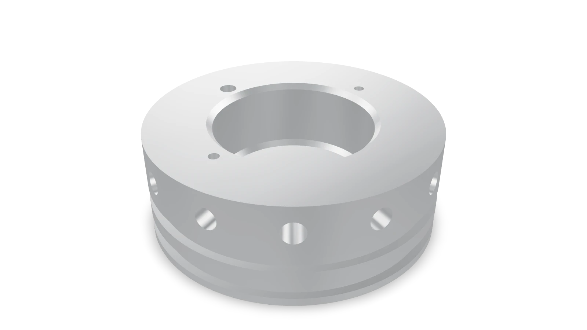

Flight hardware
Unified forward closure
We used to machine three forward closures for every motor. I redesigned them as one part, and that part flew.

- Consolidation
- 3 closures → 1
- Part count
- −67%
- Machining setups
- Two fewer
- Ports
- Hydrostatic + hot fire merged, sealed for flight
- Min. factor of safety
- About 11 (preliminary design)
- Processes
- Lathe, drill press, mill
01Three closures for one motor
We were machining three separate forward closures for one solid rocket motor: one for the hydrostatic proof test, one for static hot fire, and one for flight. That meant three parts and three machining setups for every motor, and two of those closures were done after one use.
02What was mine
I drove the redesign and did the modeling, the analysis, and the fastener and sealing evaluation. Machining was shared with teammates. The thermal and mechanical loads came from our team lead by way of OpenRocket, and teammates produced the final drawings.
03Merging the ports
Going from three closures to one cut the part count by 67% and got rid of two machining setups.
Most of the work was figuring out what each version really needed. The ports were the tricky part. The test closures need fill and instrumentation ports, and for flight you'd rather have no holes at all. I merged the hydrostatic and hot fire ports into one port that gets sealed for flight, so the same part works for all three without weakening the flight version.
I modeled it in Onshape, ran SolidWorks Simulation on a preliminary design to check factor of safety under flight loads, and ran a trade study comparing fastener patterns and seal configurations against the combustion chamber's specified thermal and mechanical loads and our assembly constraints, weighing manufacturability throughout. Duke Aero ultimately scrapped the sealing solution that came out of that study, so it isn't part of what flew, but the evaluation behind it was my work.

Interactive 3D · 242 KB

04Hot fire and flight
My teammates and I machined the final parts on a lathe, drill press, and mill. The closure went through the April 2026 static hot fire, and the motor flew.
05What I'd change
The minimum factor of safety came out around 11, which is not a good number. It means the geometry was set by available stock, machinability, and handling rather than by load, and on a weight-critical vehicle that is mass we'd want back. I'd also verify the chamber pressure independently instead of taking it downstream of someone else's model, since every number after it depends on it.